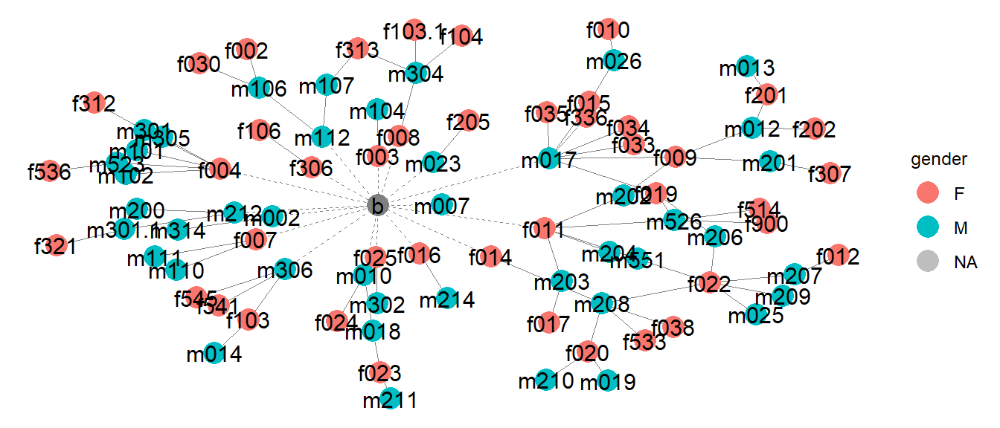
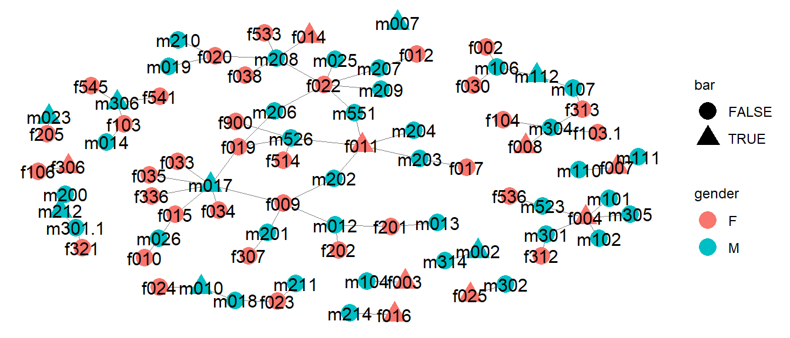
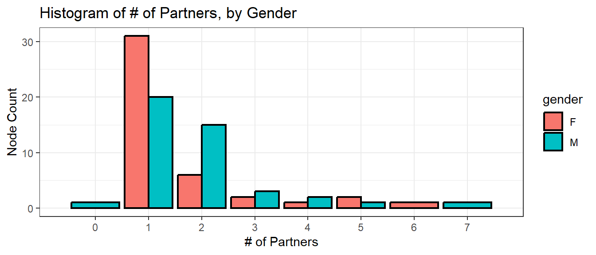
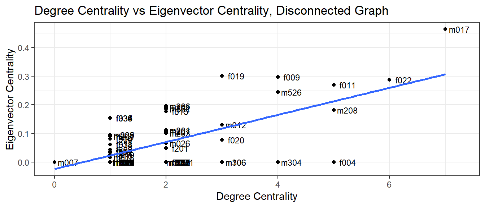
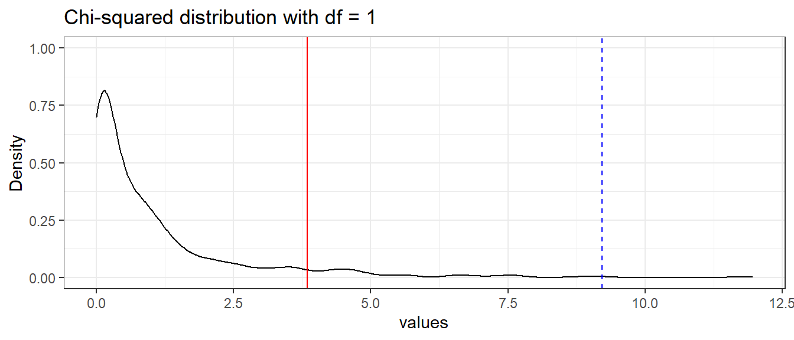
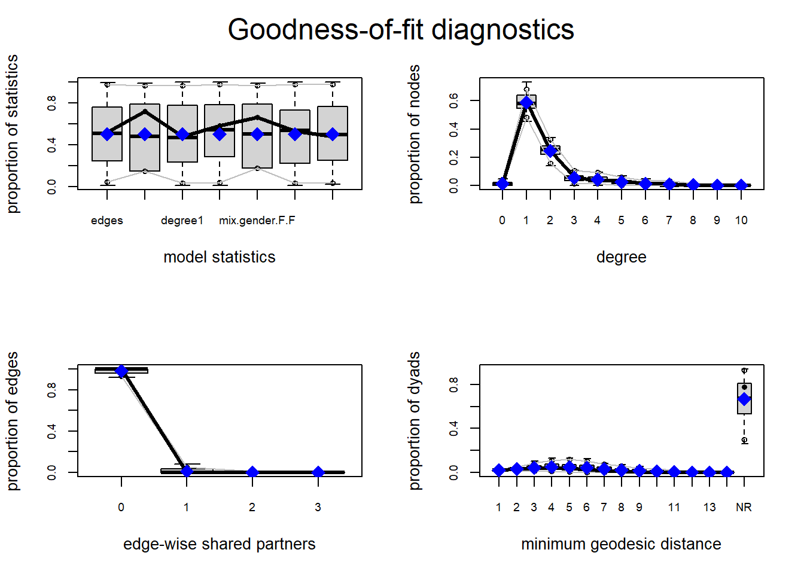
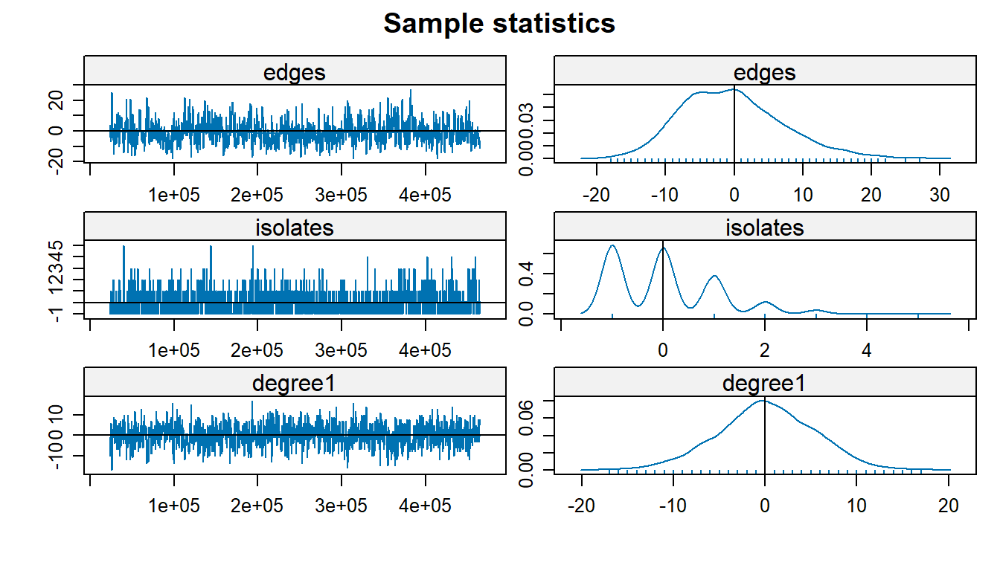
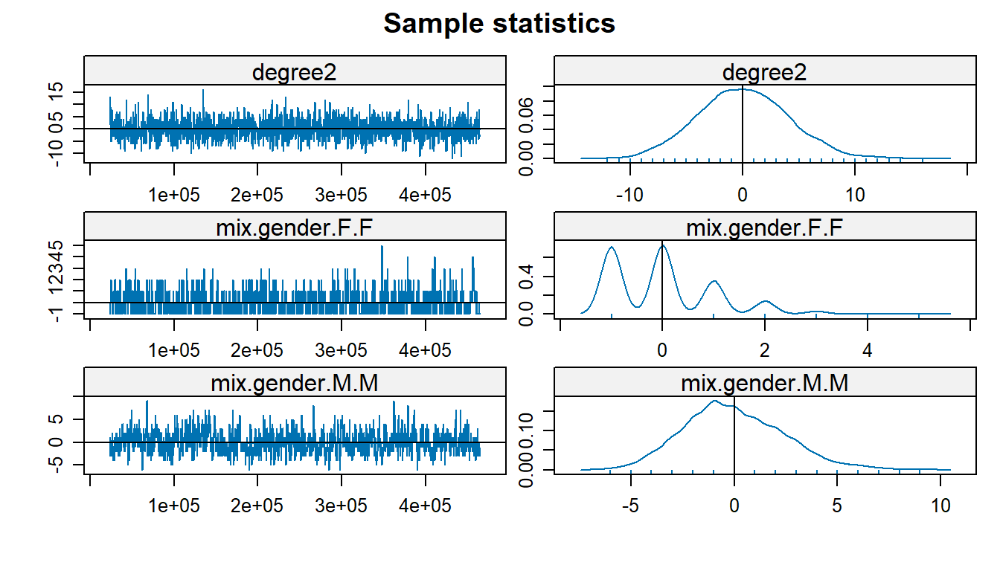
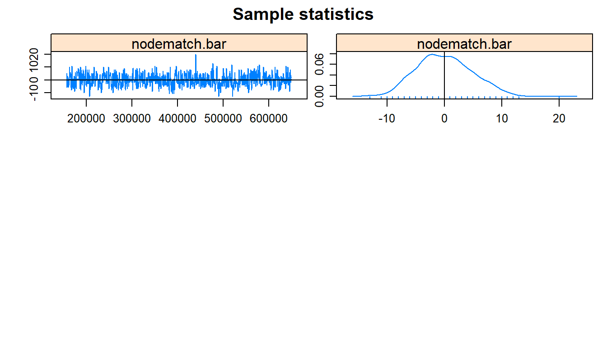

Contact tracing for sexually transmitted diseases (STDs) such as gonorrhea, chlamydia, syphilis etc. is a persistent epidemiological problem, as it depends on individuals getting routinely tested as well as informing their sexual partners of their positive diagnosis should they receive one. Compounding this with the fact that many of these positive cases can be symptomless but still contagious creates a serious issue. Gonorrhea in particular is a disease that can be asymptomatic in both men and women who have it, that can go so far as causing infertility or lead to a life-threatening condition.
This dataset concerns a localised outbreak of Neisseria gonorrehoeae (gonorrhea) in an indigenous First Nations community located in Alberta, Canada. It was originally analyzed in a paper by Prithwish De, et al. (2004), in which they used measures of network centrality (e.g. information centrality) to determine the association between the risk of infection between members of the network and their position within the network itself. The data was sourced from an earlier 2001 study by the same authors (De, et al. 2001) in which they formulated a plan to address the outbreak.
This analysis looks at measures of centrality (degree centrality, eigenvector centrality) for the disconnected graph, as well as formulating an exponential random graph model (ERGM) for the network so as to create a basis for simulation and inference of disease propagation / sexual networking within an indigenous population. This can allow us to infer the behavior of a minority group and address their unique needs. Moreover, it also allows us to infer the probability of some ego having a certain number of ties, as well as allowing us to estimate the propensity for homosexual ties to form between individuals in this community.
Gonorrhea is a sexually transmitted disease/infection (STD/STI) which can be transmitted orally, vaginally or anally. Although it can have many serious side effects, it can also be symptomless, leading to individuals unknowingly infecting their partners. When untreated, it also makes HIV more susceptible to transmission, making gonorrhea itself a risk factor for the propagation of HIV. In Canada, reported cases increased by 38.9% between 2003 and 2012, with rates highest in the 20-24 year old age group. It is the second most commonly reported STI in Canada (Totten, et al. 2015).
According to the 2016 Canadian census, approximately 7% of Albertans identify as First Nations, one of the indigenous groups native to Canada, compared to approximately 5% throughout all of Canada. First Nations peoples experience a disproportionate prevalence of STDs in their population relative to other groups in Canada, due at least in part to cultural differences, and lack of access to resources such as those in more urbanized areas and more populated by non-indigenous people.
The sociometric approach for enumerating a sexual network entails an iterative process in which the subject names past sexual partners, who are them traced and interviewed to identify whether they are linked and also to identify other contacts in the network (Doherty 2005). Conversely, the egocentric approach bases the network entirely on the information volunteered by the original subject. The latter approach is the method used in the collection of this data.
The design suffers from incomplete-network bias when partners cannot be traced or recruited for a variety of reasons (Doherty 2005). As is typical for data collection processes in which information is nominated by the ego, and especially in the sensitive case where sexual partnering is involved, there is bound to be some information missing from the data. e.g. Self-reported behavior from an ego may not necessarily reflect their practices in reality. The data is subject to an individual possibly withholding information, or simply not having the information at all. For example, an individual may be reluctant to disclose the identity of a sexual partner if they are in a monogamous relationship and to disclose this event would mean owning up to infidelity, or perhaps if the sex was in exchange for money i.e. sex work. It could also be that the sex occurred in an anonymous context and they simply do not have the information on the individual. Societal attitudes towards sex and sexual health both in a Wester/Canadian context and also in an indigenous/Aboriginal context can and should be kept in mind when drawing conclusions from this data.
The contact tracing of sexual partners is relegated to those who have a positive test result, and since such individuals may have markedly different positions within a network, tracing a network consisting solely of STI-positive partners has an inherent bias. In our case, since the STD clinical reports don’t contain complete sexual contact information, the original index case could not be identified. Questions about sexual risk factors and drug use were also omitted due to a lack of respondents (De 2001), and the lack of information on sexual practices e.g. condom usage, drug use could be considered a blind spot in this data.
This dataset, constructed in the form of an adjacency matrix,
contains 89 nodes, one of which is the “event” of attending a bar
(i.e. when a node has a tie with this bar node, it means they attend the
bar). Two of these nodes (denoted by x and x2)
are missing information about their gender which is otherwise indicated
by an m or f in the label of the respective
node, followed by a number with which to differentiate them. These nodes
with missing data were dropped on account of their missing information
and it is thought that their exclusion is mostly inconsequential on
account of their both having only one tie.
While the data was originally directed in its original form, we opted to symmetrize it, since this makes more sense in the context of a sexual network in which a nomination should always theoretically be reciprocated.

Looking at this initial sociogram, where the bar node is firmly in the center, we see that it has 17 ties to other individual nodes, which themselves have connections to at least one other node in the rest of the network. The remaining 74 edges in the dataset are between individuals. Of these 74 edges, approximately 90.5% of them are between male and female nodes, and approximately 48.6% of them are between bar-attendees and non-attendees.
While the majority of ties are between individuals of the opposite
sex, e.g. male-to-female or female-to-male, there are a minority of
instances where individuals have a tie to individuals of the same sex,
e.g. m112 has ties with both m106 and
m107, who both in turn have ties to at least one female
node.
The node m010 is also unique in that it happens to have
ties to one female node (f024) and one male node
(m018), the latter of which in turn has a tie with a female
node (f023). The idea of men who have sex with men (MSM) or
women who have sex with women (WSW) acting as bridging nodes between
otherwise disparate sexual networks was something considered in the
exploratory analysis but there just wasn’t enough data to delve deeper
into this subject.

There are about 9 or so subcomponents of this graph; notice that the largest among them has 3 bar attendees within it, 2 of whom have at least 5 ties to other individuals. Notice there is one isolate where a male node attended the bar but otherwise has no ties to any other node. There also a a series of smaller sub-components where there is only one edge between two nodes, one of whom is a bar attendee. The largest subcomponent of the graph includes 38 of the 86 nodes in the network, or approximately 44% of all egos.
Serosorting refers to the practice of choosing a sexual partner assumed to be of the same status of oneself with regard to an STI, although it is mostly used in the context of HIV. It is a possible methodology to stem outbreaks without encouraging individuals explicitly to engage in either abstinence or monogamy, i.e. individuals can remain sexually active with other partners if they so wish.
Note the presence of a case in the largest subcomponent, in which 6
separate nodes (f019, m526, f011, m551, f022 and
m206) are jointly connected through one another such that
they can all reach each other in 3 steps or less, through at least two
of their alters. This is the only such appearance of a “closed loop” in
the entire network.
It does present a situation in which these individuals who are part of the same social network can serosort amongst themselves in order to stem an outbreak before it starts propagating to the rest of the component, whilst maintaining a sexually active lifestyle with more than one person. In a case like this where we don’t know the timeline of the sexual encounters, it’s possible that any one of these people either has or will get gonorrhea at some point, so they would either have to abstain, commit, or alternatively, form a closed loop such as the one presented here. This assumes that expecting an ego to engage in abstinence or monogamy is unrealistic for them, which may be appropriate considering the context.
For example, note both m206 and m551 of
them each have a degree of 2, but their alters (f019,
f011, f022) have a high degree. Suppose these
latter three could be encouraged only to sleep with the other
individuals in this loop, they would still be able to sleep with
multiple people, and not spread the STI to others in the community. This
is just one alternative to the common recommendations of abstinence or
monogamy with respect to STI transmission reduction.

Note that the distribution in number of partners is more right skewed for women than it is for men, owing to the fact that about a third of more women in this network had 1 partner compared to men who had 1 partner. Generally men’s number of partners is more spread between 1-2 partners. The distribution is similar for both genders when looking at those having more than 2 partners.
According to Borgatti and Everett (2006), centrality is a summary index of a node’s position in a graph, based on sums or averages of one of several things: 1) the number of edges the node has, 2) the length of the paths that end up at the node, or 3) the proportion of paths that contain the node inside of it (not as an endpoint).
Different measures of centrality depend on functions of one of these aspects and communicate different things about a node, depending on the algorithm for the centrality measure. In this paper, we’re going to look different kinds of centrality as a means of quantifying the impact of individual nodes on the network.
Network centrality was covered in De, at al (2004) but in the context of the connected network, and we want to expand on this by looking at centrality within the disconnected network (which does not contain the bar node).
For an undirected network such as this, then the degree of some node \(i\) is just the count of ties it has to other nodes. Supposing we had some adjacency matrix \(A\), then the degree of node \(i\) is equal to
\[D_i = \sum_j a_{ij}\]
where \(j\) is the number of nodes in the network and \(a_{ij} = 1\) given that node \(i\) has a tie with node \(j\), and zero otherwise. In this paper “degree” will be used interchangably with “number of (sexual) partners” as these are the same thing in this context.
| Gender | Mean Number of Partners |
|---|---|
| F | 1.605 |
| M | 1.837 |
We observe from the data that on average, men have a slightly higher number of sexual partners than women in this sample. Note that we cannot compare the mean number of partners via a t-test in this case, because in this case, the two groups influence each others’ degree.
| Attended Bar | Mean Number of Partners |
|---|---|
| FALSE | 1.623 |
| TRUE | 2.118 |
We further observe that those who attend the bar end up having an average of about 1.6 sexual partners compared to as many as 2.1 partners from those who did. Again, these two quantities are technically dependent (owing to the fact that these are not isolated samples, i.e. the bar attendees can be partnered with the non-attendees), so we can’t formally compare them with a t-test.
Eigenvector centrality is calculated both as a function of a node’s degree but also as a function of the degree of the nodes it is connected to. In other words, a node with a high eigenvector centrality is well-connected to nodes that are themselves well-connected. Contextually, an ego in this setting would have a high number of partners who themselves also have a high number of partners.

While there is a positive correlation as one would expect, there are
interesting observations that can be made about the difference
cross-sections of high-low centrality here. For example, for cases in
which there are a high degree centrality, but still have an eigenvector
centrality of 0, this implies that while that ego has many alters
(partners), but these partners themselves have a degree of 1,
e.g. f004, m304, m306.
This implies that having a high degree centrality is not necessarily itself indicative of having a high impact on the network, as long as that ego’s alters have few partners. Going back to the idea around “serosorting” (partnering with individuals of the same status), it’s possible that individuals can still be sexually active with multiple partners as long as their respective partners are aware of their status and are deliberately not finding new alters themselves.
Exponential random graph models (ERGMs) are a family of statistical models for social networks that permit inference about prominent patterns in the data, given the presence of other network structures (Carrington and Scott, 2011). For a given set of \(n\) actors, an ERGM models an observed network \(x\) by assigning a probability to every network of \(n\) actors, and the form of such a model is as follows
\[\log \big[ \frac{\Pr(Y_{ij} = 1 | y_{ij}^C)}{\Pr(Y_{ij} = 0 | y_{ij}^C)} \big] = \sum_{A(Y_{ij})} \eta_A d_A(y)\]
where the sum is over all configuration types \(A\).
This equation implies that there is a probability distribution of all possible networks with \(n\) nodes, with each such network having their own distinct probability.
The ERGM model requires a one-mode network, so we can create one by
dropping the bar node from the data while still retaining the
information of bar attendance as a vertex attribute. The models were
generated using a combination of both maximum likelihood and Markov
Chain Monte Carlo (MCMC) via the ergm package. We were able
to compare these using likelihood ratio tests and the Akaike Information
Criterion. Thus, we were able to use frequentist techniques to determine
which parameters were ideal to fit, and then ultimately fit this final
model using Bayesian inference with MCMC. MCMC and the
Metropolis-Hastings algorithm used in this inference are briefly
explained in this literature.
A Markov Chain is a stochastic process that goes from one state to another, with the future state \(X_{t+1}\) depending only on the current state \(X_t\) at time \(t\), i.e.
\[\Pr(X_{t+1} = x | X_t = x_t)\]
A Monte Carlo process refers to a simulation that samples many random values from a posterior distribution of interest. Hence a Markov Chain Monte Carlo (MCMC) simulation is a simulation of a random process whose future value depends only on the current value.
A common MCMC algorithm is the Metropolis-Hastings algorithm, which
is used in the ergm() function to get paramter estimates.
In this algorithm, the process “randomly walks” starting from some \(\theta_0\).
After some given number of samples (some of which may be ‘thrown out’ due to burn-in or thinning), we arrive at some estimate for the parameter, which in this case, would be the estimate for the coefficient \(\eta_A\) corresponding to the effect \(A\) in the ERGM, where \(A\) can be any of the many effects possible for an ERGM model e.g. homo/heterophily.
Having delineated our techniques for estimating our parameters, we
then opted to fit several different ERGM models. When fitting these
models, first we started with the simplest model that only models the
number of edges (this would be akin to an intercept-only model in
logistic regression). We then built several more models which only had
one parameter, and then compared the Akaike Information Criteria (AIC)
of the models to determine which among these model parameters were worth
including. Among the model parameters fit were homophily
(nodematch), heterophily (nodemix) and degree
(degree).
The Akaike Information Criterion (AIC) is an estimator of out-of-sample prediction error. We use it as a means of model selection, where we generally opt to select the model with the lowest AIC.
\[AIC = -2 \ln(\mathcal{L}) + 2k\]
Where \(\mathcal{L}\) is the likelihood of the model, and \(k\) is the number of parameters.
The Bayesian Information Criterion (BIC) is similar to the AIC, but it introduces a penalty term for the number of parameters in the model. This is because a model with more parameters is generally more likely to have a lower AIC than another with less parameters; this prevents us from being as biased towards more complete models.
\[BIC = \ln(n) k - 2 \ln (\hat{L})\]
where \(\hat{L}\) is the maximized value of the likelihood function of the model, \(n\) is the number of data points, and \(k\) is the number of free paramters to be estimated.
| formula | AIC | BIC |
|---|---|---|
| gonnet_net_nobar ~ edges | 725.6599 | 731.8638 |
| gonnet_net_nobar ~ edges + nodematch(“bar”) | 718.7543 | 731.162 |
| gonnet_net_nobar ~ edges + degree(d = c(1:2)) | 679.5217 | 698.1333 |
| gonnet_net_nobar ~ edges + nodemix(“gender”, base = 2) | 669.8531 | 688.4646 |
| gonnet_net_nobar ~ edges + nodefactor(“bar”) | 725.7581 | 738.1658 |
| gonnet_net_nobar ~ edges + nodemix(“bar”) | 714.4374 | 726.7693 |
| gonnet_net_nobar ~ edges + concurrent | 713.7364 | 726.1441 |
| gonnet_net_nobar ~ edges + isolates | 692.9021 | 705.3098 |
| gonnet_net_nobar ~ edges + kstar(2) | 727.3123 | 739.72 |
Here we have a table depicting the various AICs/BICs for each
individual ERGM model. In model selection we start with the most simple
intercept model, and then gradually add effects to it. In this case, we
notice that among these effects, degree, homo/heterophily for gender
(nodemix('gender')) and isolates seemed to produce the
greatest decreases in the respective information criteria. We then
proceeded to fit models with these effects. There are some terms
(nodematch(bar), concurrent) that seem to
improve on the intercept model but only slightly. We can fit two models
that both include and exclude these extra effect(s): a full and a nested
model, and compare them with a likelihood ratio test.

This curve represents the chi-squared distribution with 2 degrees of freedom; which is the distribution of our likelihood ratio test statistic under the null hypothesis \(H_0\), which states that the nested model fits the data as well as the full model, i.e. the nested model is preferred. Should we reject this null hypothesis, we would opt for the full model with the added effect instead. The number of degrees of freedom corresponds to the number of added parameters that the full model has over the nested model.
The red line in this curve represents the 95% critical value of the distribution, the point at which we would reject the null hypothesis. Note that our test statistic \(LRT\), denoted by the dashed blue line, falls beyond this critical value, hence we have enough evidence at a \(0.05\) significance level to reject \(H_0\).
Thus, we conclude that the nested model does not fit the data as well as the full model and hence we opt to include the additional terms in the full model.

The gof() function for goodness of fit tests several
different aspects of the network, namely degree, edgewise shared
partners, and geodesic distances. Each of these illustrates the
distribution of the network at a different level: node, edge, and dyad,
respectively.
The function works by simulating similar networks based on the fitted ERGM model, and observes their respective distributions and how the true values of the observed network compared to it. As we can see, the true values of the model statistics fall squarely in the middle of the estimates drawn by the boxplots of the simulations. We also see that degree of 1 and 2 are well represented in the networks, in fact one might notice that this distribution is remarkably close to that of the histogram of the degree distribution formulated earlier in this paper. Edgewise shared partners (triangles) were not something commonly observed in this dataset, and this plot corroborates that. Finally, geodesic distances were fairly low among connected nodes and a large proportion of the nodes were themselves isolated from the majority of the other nodes because they were part of an isolated subcomponent.
Overall we find that the goodness of fit for this ERGM model is satisfactory, so we can proceed to model diagnostics, particularly the diagnostics of the respective MCMC chains.
When using MCMC chains for parameter estimation, our goal is for the chains to converge, showing that we have found a reasonable estimate for our respective parameter. We can diagnose this by looking at traceplots of the MCMC chain as well as the density curves. We want to see the traceplot have constant variance (homoskedascticity), oscillating around 0, and for the density plot to be likewise centered at 0 and shaped like a bell curve.

Most of the traceplots and density plots given by the MCMC diagnostics show us that the respective MCMC chains have converged, so our model estimates are sound. We do notice that in the case of the estimate for the F-F nodemix term, the distribution deviates somewhat from this, but this could be easily attributed to the lack of F-F ties in the dataset. We would like to comment that with F-F as the reference class with respect to this parameter, the M-F and M-M terms do converge easily–but for the sake of a more meaningful interpretation, we opted to treat M-F ties as baseline here. The isolates term also does not seem like it converges so this throws its inclusion in the model somewhat into question as well (it would not be unreasonably to drop this term from the model).
Recall the equation for the ERGM model
\[\log \big[ \frac{\Pr(Y_{ij} = 1 | y_{ij}^C)}{\Pr(Y_{ij} = 0 | y_{ij}^C)} \big] = \sum_{A(Y_{ij})} \eta_A d_A(y)\]
The coefficients represent the weight of the log-odds of a tie for a 1 unit increase in the effect (or in the case of a categorical variable, its inclusion), with all other effects held constant. A positive weight implies that the probability of a tie increases with the inclusion of that effect, and conversely a negative weight implies that the probability decreases with its inclusion.
Similar to interpreting logistic regression, we can convert from the log-odds to probability accordingly:
\[\begin{aligned} \log \big[ \frac{\Pr(Y_{ij} = 1 | y_{ij}^C)}{\Pr(Y_{ij} = 0 | y_{ij}^C)} \big] & = \eta_1 d_1(y) + \eta_2 d_2(y) + ... + \eta_6 d_6(y) \\ \frac{\Pr(Y_{ij} = 1 | y_{ij}^C)}{\Pr(Y_{ij} = 0 | y_{ij}^C)} & = \exp(\eta_1 d_1(y) + \eta_2 d_2(y) + ... + \eta_6 d_6(y)) \\ \frac{\Pr(Y_{ij} = 1 | y_{ij}^C)}{\Pr(Y_{ij} = 0 | y_{ij}^C)} & = \exp(\eta_1 d_1(y)) \times \exp(\eta_2 d_2(y)) \times ... \times \exp(\eta_6 d_6(y)) \end{aligned}\]
where \(\eta_i\) is the \(i\) effect (e.g. degree), and \(d_i(y)\) is the difference score for the inclusion of the \(i\)th effect.
Because of the properties of the exponential function, a single-unit increase in some effect (in the discrete or continuous case), or the inclusion of some effect (in the categorical case) has a multiplicative effect on the odds of a tie forming, namely \(\exp(d_A(y))\) for the effect \(A\), while all other effects are held constant.
| MCMC Estimate | MLE Estimate | |
|---|---|---|
| edges | -1.787 | -1.779 |
| isolates | -0.171 | -0.230 |
| degree1 | 2.688 | 2.670 |
| degree2 | 1.432 | 1.415 |
| mix.gender.F.F | -3.527 | -3.539 |
| mix.gender.M.M | -1.703 | -1.711 |
| nodematch.bar | -0.700 | -0.726 |
These interpretations are based on the MCMC estimates.
The terms denoted by the degree() component of the ERGM
formula help us see whether the structure of the network can be
explained by degree distribution. Converting from log-odds to
probability is done in R by the plogis() function which
executes the following calculation
\[p = \frac{\exp(\beta_A)}{1 + \exp(\beta_A)}\]
where \(\exp(\beta_1)\) is the conditional odds of a tie forming given a one-unit change in some effect statistic \(\beta\) for the effect \(A\).
Because edges (\(\eta_1\)), isolates (\(\eta_2\),) degree (\(\eta_3, \eta_4\)) are functions of ties, we have to interpret the effect their changes have on the (log-)odds in unison. Namely, changes to degree imply changes to the number of total edges in the network as well as potentially the decreasing of isolates in the network.
If we assume that all nodes that a focal node may connect to are all isolates, we can interpret degree’s respective “contributions”, as well as the other coefficients accordingly.
For some change in degree from 0 to 1, the log-odds of a tie of any effect would change by \((d_1(y) - d_2(y) + 2d_3(y)) \approx 3.806\).
For some change in degree from 1 to 2, the log-odds of a tie of any effect would change by \((2 d_1(y) - 2 d_2(y) + 4 d_3(y) + d_4(y)) - d_1(y) \approx 9.030737\)
\(d_5(y) \approx -3.563\) implies that the odds of a tie forming between two female nodes is about \(\exp(-3.563) \approx 0.03\) times lower than that of an M-F tie, all other effects equal.
\(d_6(y) \approx 1.691\) implies that the odds of a tie forming between two male nodes is about \(\exp(-1.691) \approx 0.184\) times lower than that of an M-F tie, all other effects equal.
\(d_7(y) \approx -0.721\) implies that the odds of a within-group tie for bar forming (i.e. attendees with attendees, or non-attendees with non-attendees) is given by \(\exp(-0.721) = 0.486\), all other effects held equal.
Our goal in this paper was to determine whether the attributes of gender and bar attendance were meaningful in the formation of ties in this sexual network, and quantifying these relationships using a model created under the exponential random graph model (ERGM) framework. We were able to create a model using Markov Chain Monte Carlo techniques, to achieve this. Ultimately we found that degree (number of partners) does well to explain the structure of the network, and that the attendance of a common venue has some influence on the propagation of the STI in the network as well. We also talked about different measures of network centrality in the disconnected graph (degree centrality, eigenvector centrality) and how they can be used to quantify one’s impact on the network. It is noted that degree centrality in particular is short-sighted and that the correlation between centrality measures brings light to how one’s impact in the network may not necessarily scale linearly with the number of one’s partners.
The ERGM model gave us a model that defines the structure of the network with regard to degree and number of isolates, and the propensity for ties to form between and across groups e.g. those who attended the bar and also across genders. Furthermore this gives us an estimator for the propensity of homosexual ties to form within the First Nations community which has broader applications for sociology with respect to sexual network formation. It also gives us an estimate of the propensity of links to form between individuals who attend a given venue, which can form the basis for such analysis to be applied to a network with more venues, or indeed other places where individuals meet each other, such as online (e.g. dating apps). Finally, it gives us estimates for the probabilities of a node having a certain number of ties, which can be vital for estimating epidemiological spread.
There are many unanswered questions, owing mostly to the lack of completeness of the data, e.g. how is it that all of the individuals who attended the bar, do not have any ties with one another? It was noted in the 2001 study by De, et al. that questions about sexual risk factors or drug use were ignored and eventually excluded as a result; it could potentially be the case that exceedingly risky behaviors e.g. anonymous unprotected sex, drug use / sharing intravenous needles, etc. could be the unifying attribute that unites these bar attendees together, aside from attendance to the bar itself.
Being that the data was taken from a population of First Nations, it would also be interesting to see the larger network in which First Nations sexually sort with non-First Nations individuals. Cultural factors do play a determining role in sexual network formation, and different cultures often have varying access to information and resources with respect to STIs, so the interplay of the respective racial groups, and the extent to which the information they carry is meaningfully transferred, is another outstanding question. For example, if safe sex is more normalized in non-indigenous populations, is a heterophilic tie between an indigenous person, and a non-indigenous person, more or less likely to follow safe sex practices, e.g. condom usage?
In an epidemiological context, these results demonstrate that ERGMs can be applied to a sexual network, including one in which geographical information is a component. There are several different determinants to sexual network formation and a dataset that was more complete with this kind of information, be it demographical (e.g. ethnicity, race, religion, class), or geographical (e.g. city, state), would be able to apply these techniques in a more advanced and critically applicable way. It is crucial that epidemiologists and sociologists delve into techniques that can accurately model sexual behavior, as typical approaches to epidemic modeling, e.g. the SIR model (in which a population is placed into three components based on being either susceptible, infectious, or recovered), are short-sighted with regard their application in STI epidemiology, as their parameterizations make unrealistic assumptions such as “random mixing”.
Techniques around intervention can also be devised based on the results of modeling an exponential random graph model. For example, consider our quantification of the effect that attending this local bar has in the area, on the dissemination of an STI in a community. This only quantified the effect of one location, but suppose the dataset contained information on multiple venues of contact, then we would be able to specifically model the effect each individual venue has on the probability of a tie forming, and hence, the odds of an outbreak taking place. From there, public health officials can then strategically determine which among these locations would be the best to actively intervene or extend outreach to. This is especially critical in the case of indigenous communities such as First Nations.
While encouraging abstinence and monogamy are common responses in public health to STI epidemics, there is still the yet unexplored possibility of encouraging individuals to form closed loops amongst their partners in which they share the same status, and also to share these partners themselves (see the example of the closed loop of 6 nodes earlier in the literature). This can prevent entirely new branches in the sexual network from forming, without expecting egos to abstain from sex completely or to commit to one individual.
One of the critical advantages that network analysis has over traditional epidemiological approaches in a sexual network context is that it is at least somewhat robust to the missingness of data that is typical of egocentric network designs. While missingness of data can lead to issues such as computational intractibility when estimating parameters, network measures such as degree centrality are fairly robust to these issues (although this varies depending on the metric). Moreover, the flexibility that Markov Chain Monte Carlo brings to otherwise computationally intractable situations is also a benefit.
Another advantage of ERGMs in particularly with respect to sexual networks is that they are effective in modeling relationships on egocentric data, as long as we have some information on the attributes on the alters, especially with respect to demographics. For example, suppose an individual has anonymous sex with someone else, perhaps through sex work, and as such doesn’t know their identity but can still share pertinent information (e.g. their gender, age, ethnicity, etc.) that can be utilized as vertex attributes in the analysis.
One of the by-products of the ERGM model was the ability of estimating the propensity of homosexual ties to form within this network, between either pairs of females or males. As mentioned earlier, First Nations and other indigenous societies do hold different views toward LGBTQ and gender non-conforming individuals, e.g. their recognition of “two spirit” people who identify outside of the typical M-F gender binary. Further research would be well spent comparing this propensity as a baseline to non-indigenous communities and comparing how these networks form and the epidemiology of STIs therein.
If we were to repeat this analysis on a similar dataset, we probably would have opted to choose a dataset with more features, such that the ERGM methodology could have had more room to work, particularly with respect to parameters like homophily and heterophily. With that said, we leave this analysis as a broad framework to be built upon by future sociologists and epidemiologists to expand the approach to modeling sexual networks and the propagation of STIs such as gonorrhea.
Carrington, P. and Scott, J., 2011. The SAGE handbook of social network analysis. 1st ed. Los Angeles [etc.]: SAGE Publications, pp.484-500.
De P, Singh AE, Wong T, et al. 2004. “Sexual network analysis of a gonorrhea outbreak.” Sexually Transmitted Infections 80:280-285.
De, Prithwish M.HSc; Singh, Ameeta E. BMBS, MSc, FRCPC†; Wong, Tom MD, MPH, FRCPC; Yacoub, Wadieh MBBCh, MSc, FRCPC‡ “Outbreak of Neisseria gonorrhoeae in Northern Alberta, Canada.” Sexually Transmitted Diseases: June 2003 - Volume 30 - Issue 6 - p 497-501.
Handcock M, Hunter D, Butts C, Goodreau S, Krivitsky P, Morris M (2018). ergm: Fit, Simulate and Diagnose Exponential-Family Models for Networks. The Statnet Project (<URL: http://www.statnet.org>). R package version 3.9.4, <URL: https://CRAN.R-project.org/package=ergm>.
Hunter D, Handcock M, Butts C, Goodreau S, Morris M (2008). “ergm: A Package to Fit, Simulate and Diagnose Exponential-Family Models for Networks.” Journal of Statistical Software, 24(3), 1-29.
Irene A. Doherty, Nancy S. Padian, Cameron Marlow, Sevgi O. Aral, Determinants and Consequences of Sexual Networks as They Affect the Spread of Sexually Transmitted Infections, The Journal of Infectious Diseases, Volume 191, Issue Supplement_1, February 2005, Pages S42–S54, https://doi.org/10.1086/425277
Public Health Agency of Canada. Report on sexually transmitted infections in Canada: 2011. Centre for Communicable Diseases and Infection Control, Infectious Disease Prevention and Control Branch, Public Health Agency of Canada; 2014. 2011. http://publications.gc.ca/site/eng/469949/publication.html.
Valente TW. Social networks and health: models, methods, and applications. New York: Oxford University Press, 2010.
van der Pol, J. Introduction to Network Modeling Using Exponential Random Graph Models (ERGM): Theory and an Application Using R-Project. Comput Econ 54, 845–875 (2019). https://doi.org/10.1007/s10614-018-9853-2
Wasserman, S. and Faust, K., 1994. Social network analysis: methods and applications. Cambridge: Cambridge University Press.